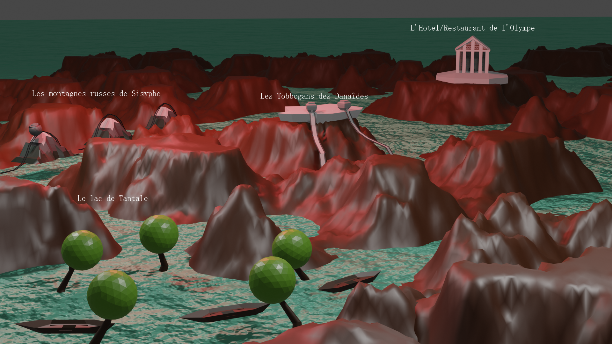
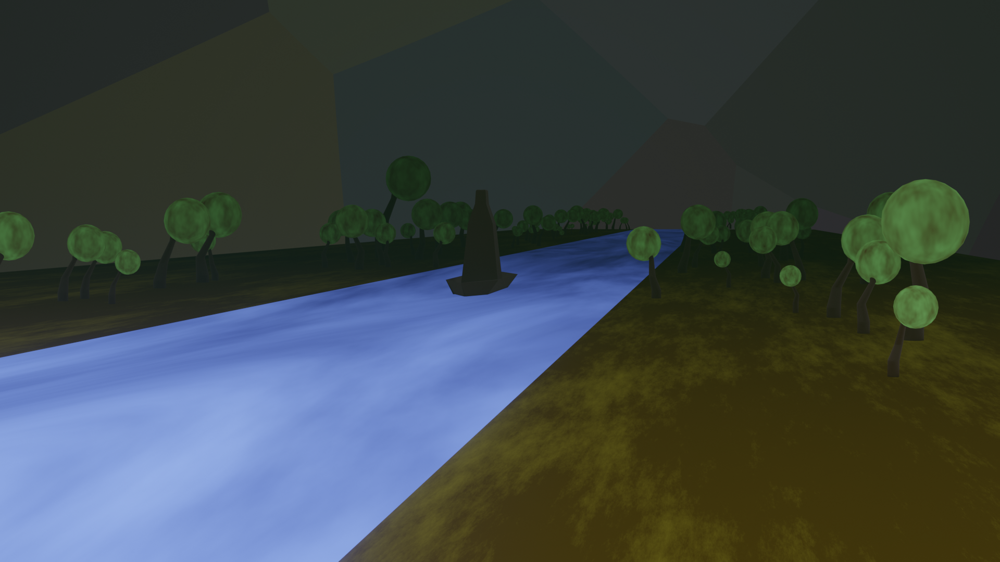

Infernix
VENI ET OBLIVISCERE PECCATA TUA IN INFERNO
Accueil :
A l'entrée du parc, thanatos vous accueille et vous emmène au lac Averne
la ou se trouve la billetterie à Obole (15€ l'Obole) que vous pourrez donner à Charon.
Pour qu'il vous emmène à la partie des enfers que vous voulez visiter,
la ou se trouveront les différentes attractions.
